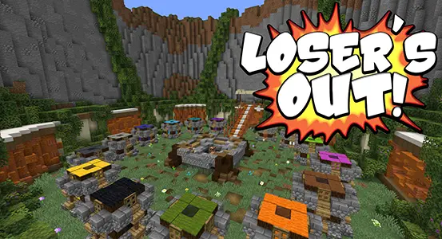

Riftbound
Riftbound is a 2D platforming roguelite prototype made in Godot by a team of 7 for one of my game development classes. You play as a traveler stuck hopping between worlds tied together by rifts, fighting enemies and collecting upgrades along the way. No two rifts are ever the same.
This was my first time working on an actual game with a team, and I ended up getting my hands on a little bit of everything! I primarily worked on the gameplay side, building the player movement, camera, run system, and parts of the procedural level generation. I also helped with level design, UI, enemies, and whatever else needed fixing — including throwing together a final boss the night before our final presentation 😂 That final boss was an inside joke from the class, so don't expect to understand it if you get that far :)
Loser's Out!

Loser's Out! is an automated Minecraft gameshow made as a love letter to the niche Minecraft gameshow community I was part of. The concept is simple: compete in a series of minigames, don't come in last, and be the last player standing! The twist? Almost everything is randomized — the games you play, the order you play them in, and even the obstacles you'll encounter within them! This was the result of a week-long game jam using Minecraft as a base. Did I mention it was made in Minecraft?
The project started from my original concept, and I did a lot of the design work that turned it into the final game. I designed and built roughly 30% of the minigames, built the main hub, and helped plan out many of the other games and systems. I also contributed some programming, but my biggest role was figuring out what games we should make and, more importantly, how to make them fun in such a complicated format.
About Me
Hi, I'm Riley!!! I'm a game developer and programmer born and raised
in Southern California, with familial roots tracing back to Ireland.
I've spent my whole life here in SoCal, which may explain the unhealthy
amount of time I've spent around theme parks and arcades.
I'm currently pursuing my Master's in Game Development at USC, where I'm
finally turning my lifelong love for games into something I can build a career around.
I'm especially interested in gameplay programming and design, and most of
my experience so far is in Godot and programming, but I'm currently branching out
into Unity, Aseprite, and Blender so I can be at least a little dangerous outside of an IDE.
While I'm here, I wanna figure out exactly where I fit into this wonderfully weird industry.
When I'm not making games, I'm probably operating rides at Knott's Berry Farm,
speed-solving Rubik's Cubes, opening Pokémon cards (OPENING, not scalping!),
watching competitive reality tv, or playing minecraft gameshows with my friends.
I collect vinyl too, mostly EDM and electropop — Porter Robinson, Madeon, and
Ninajirachi have been on heavy rotation as of late.
If you want to get in touch, feel free to contact me on discord
@RileyDStroyer,
but if you prefer email,
rileydonovanst@gmail.com or
rstolarz@usc.edu
work too!